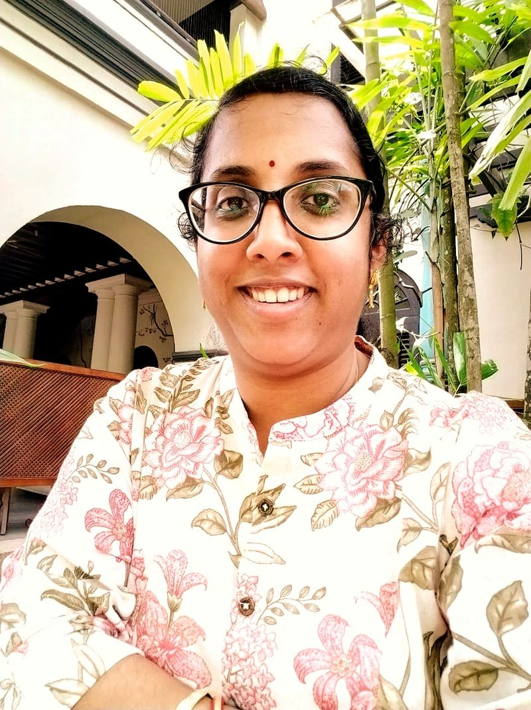

AstroBurst
Observations & Physics of High Energy Transients
Welcome to the homepage of Shabnam Iyyani's astrophysics research group at IISER Thiruvananthapuram.

Dr Shabnam Iyyani
I am an astrophysicist currently serving as an Associate Professor in the School of Physics at the Indian Institute of Science Education and Research (IISER), Thiruvananthapuram. My research interests encompass the study and modeling of various observational and physical aspects of gamma-ray bursts (GRBs).
Gamma ray bursts are the most energetic explosions known to occur in the Universe. They are associated with the death of massive stars or merger of compact binaries like neutron star - neutron star or neutron star - black hole.
AstroBurst is a research profile that showcases our research interests in high energy astrophysics. Our team of researchers is dedicated to exploring the mysteries of the universe and discovering new insights into the workings of our cosmos. Our research group has published numerous papers in top scientific journals and we are constantly seeking new discoveries in astrophysics and astronomy research areas. We also have several vacancies available in our group for talented researchers who share our passion for astrophysics.
About Me
I am originally from Thrissur, Kerala, India, and have been captivated by astronomy and astrophysics since childhood. I earned my doctorate in high-energy astrophysics from Stockholm University. Since 2021, I have been serving as an Assistant Professor in the School of Physics at the Indian Institute of Science Education and Research (IISER) Thiruvananthapuram.
Employment profile
- 2026 – PresentAssociate ProfessorIndian Institute of Science Education and Research Thiruvananthapuram
- 2021 – 2026Assistant ProfessorIndian Institute of Science Education and Research Thiruvananthapuram
- 2021 – 2025INSPIRE Faculty FellowIndian Institute of Science Education and Research Thiruvananthapuram
- 2020 – 2021INSPIRE Faculty FellowInter-University Centre for Astronomy and Astrophysics (IUCAA), Pune
- 2016 – 2020Vaidya Raychaudhury Post Doctoral Prize FellowInter-University Centre for Astronomy and Astrophysics (IUCAA), Pune
- Jan – July 2016Visiting Postdoctoral FellowTata Institute of Fundamental Research (TIFR), Mumbai
- 2013Visiting Doctoral FellowLaboratoire Univers et Particules de Montpellier, France
- 2011 – 2015Erasmus Mundus Joint Doctoral FellowStockholm University, Sweden
Education
- 2011 – 2015PhD, Stockholm UniversityThesis: ‘Photospheric emission in gamma ray bursts: analysis and interpretations of the observations by Fermi gamma ray space telescope’. Supervisor: Dr Felix Ryde, KTH, Stockholm, Sweden.
- 2009 – 2011MSc Physics, Indian Institute of Technology RoorkeeSpecialization in Nuclear physics. Master thesis: ‘Neutron star and equation of state’.
- 2006 – 2009BSc PhysicsChrist College Irinjalakuda, Calicut University
Awards
- ASI AstroSat Prize Award 2025 – Rushikesh Sonawane
- Prof. P. I. Paul Outstanding Young Physics Researcher Award 2024, by Christ College Irinjalakuda, Kerala
- Performance Review Grade for INSPIRE Faculty Fellow – Excellent (2024)
- Selected as the Fellow of Indian National Young Academy of Sciences (INYAS) (2024 – 2029)
- Selected to the International Astronomical Union (IAU, 2022)
- Selected to IUCAA Associateship (2024 – 2027)
- Selected as the Vaidya Raychaudhuri Postdoctoral Fellow (2016 – 2021)
- Selected as the Erasmus Mundus Joint Doctorate Fellow (2011 – 2014)
Grants
- ANRF – Advanced Research Grant 2025 (Rs 1 CR) (2026 – 2031)
- Indo-German WISER Award 2025 of Rs 37 lakhs (2026 – 2029)
- High Performance Computing Proposal at IUCAA – 50000 core hours and 2000 GB storage, Jan – June 2025
- NASA Fermi Guest Investigator Program – Cycle 18 (2025)
- SERB Start up Research Grant (SRG) of Rs 19 lakhs (2022 – 2025)
- INSPIRE Faculty Research Grant of Rs 35 lakhs (2020 – 2025)
- Vaidya Raychaudhuri Prize Fellowship – Research grant of Rs 10 lakhs (2016 – 2020)
- Visiting Postdoctoral Fellowship at TIFR (2016)
- Stockholm University Doctorate Fellowship (2014 – 2015)
- Erasmus Mundus Joint Doctorate Fellowship (2011 – 2014)
“Life is not easy for any of us. But what of that? We must have perseverance and above all confidence in ourselves. We must believe that we are gifted for something and that this thing must be attained; Have no fear of perfection; you'll never reach it.”Madame Marie Curie